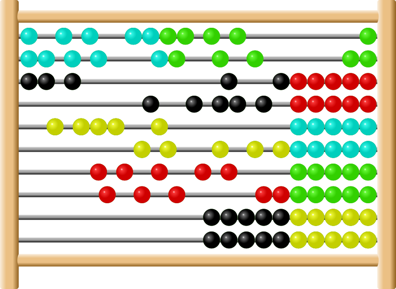

| 1 2 3 4 5 6 7 8 9 10 11 12 13 14 15 16 17 18 19 20 21 22 23 24 25 26 27 28 29 30 31 32 33 34 35 36 37 38 39 40 41 42 43 44 45 46 47 48 49 50 51 |
| - = 07 Jan 2018 = - |
| 23:56:04 | BACKUP |  The great official daily backup is now running, and I'll be here as soon as I can... :-/ |
| 23:54:42 | CHARACTER |  I've set things right to make Ryanna start on level 1... BUT, the automated script linkers are not yet fully set up, and as I really need to sleep now, it won't happen right now. As the holidays are now also over, I will have to see how to cleverly do this, as the length of the RPG CHAR library really struck me, and thus i could do less done than I hoped for. That character bar had yet to be there, well, I'm still miles away from implementing that, and given the form of my upcoming schedule outside game development that is really an unrecoverable setback which can cause a delay that I cannot really afford at this moment. Well these kinds of setbacks come with the territory. I suffered them on ALL my big projects now, so this project will survive this one too.
Once all the scriptlinkups work, which should be less work now, things can go faster, but I would be happier to have booked more progress. A serious miscalculation :( |
| 23:09:34 | STATUS |   At this moment no crashes pop up But that doesn't mean everything is alright, but still it's a good sign ;) |
| 23:07:41 | FIXED |  Code Typo |
| 23:06:02 | FIXED | Case Sensitivity in Lua always strikes when converting from Blitzmax |
| 23:02:44 | SCRIPT |  The start game script has been set up to initiate the creation of Ryanna as a character |
| 22:49:52 | TEST |  Okay, the game does not really do weird things... good... |
| 22:44:34 | FIXED | Import Error fixed |
| 22:35:06 | GITHUB |  Pushed all this crap |
| 22:29:44 | BACKUP | Running the Backup... I don't wanna have to do this one over... mind you! |
| 22:27:29 | MEDICAL |  Leaving me a headache in the process |
| 22:27:17 | SITE |  Added tag MEDICAL |
| 22:26:58 | DONE |  All done... at least no parse error pop up, because I cannot yet test if it acutally works as it should, but the most important milestone has been passed in this matter now. |
| 21:58:38 | STATUS | 1000+ lines translated... Come on, Jeroen! You can do it! |
| 20:44:12 | ENHANCEMENT |  Boolean recognition in binread |
| 19:51:58 | STATUS | WHOOOOHOOO! The "API" is done! |
| 19:46:17 | STATUS | the end of the "api" is drawing closer.... |
| 19:11:23 | DONE | Already made sure the 'api' is returned though, before I forget that. |
| 19:11:05 | NOTE |  It's more than 1000 lines in total, so I still have awhile to go :( |
| 19:10:52 | STATUS | over 600 |
| 18:37:19 | STATUS | As far as I can tell everything in the original API except for the "points" should now be translated.... (sigh).... |
| 18:24:04 | STATUS | And past 500 lines..... wooohoooo.... way to go, Jeroen! |
| 17:50:00 | BACKUP | As it's almost time for the news I'll let the backup run while I'm doing this... It's not like I'm goin anywhere I guess... |
| 17:48:51 | STATUS | Brings me now to approx 500 lines of code translated.... Waar ben ik aan begonnen? |
| 17:47:34 | NOTE | on the charlister ;) In the original this was a string separated by ;, but that was because MaxLua could not push tables to Lua. Now that we are using "pure" Lua, things are different. ;) |
| 17:30:32 | STATUS | Almost 4000 now.... This is a mindkiller, you know... |
| 17:16:43 | STATUS | 375 lines, and the end is still not near.... |
| 16:54:40 | OFFTOPIC |  --[[ The fact that I never noticed I never set this damn function, means that I never missed or needed it, so I doubt I'll need it now. I wish I could remember what I had in mind back then....
Method ModStat(char,stat,modifier) ' BLD: Set the modifier
End Method
]]
|
| 16:40:57 | NOTE | And I really don't expect it to work in the first go! |
| 16:40:46 | STATUS | Approx 300 lines of BlitzMax code have now been translated, however I will now get into the more dangerous parts of this routine |
| 16:29:53 | STATUS | That job is now halfway done.... I guess I won't achieve what I set myself to do, but I never realized this BlitzMax module was THIS large.... |
| 16:27:40 | SCRIPT | In order not to have to re-invent the wheel I'm now translating the original RPG Stat code into pure Lua code.... This can take awhile, though.... |
| 14:31:43 | STATUS | At least this part of the deal works.... Now stuff can get harder, as I have to create the character record for Ryanna.
This is always a fucking hard part (excuse me my language), but on top of that, she's now the first in a brand new engine environment, which doesn't really make it easier on me, as I now have to rewrite the character system too. |
| 14:26:28 | OFFTOPIC | Racists... Sometimes you gotta love 'em for the humor you can make with them: 
|
| 13:55:25 | FIXED | non understood commands better message handling |
| 13:46:19 | TEST | Time to put this to the test. |
| 13:46:11 | FIXED | And a bug on non-parameter commands has been fixed |
| 13:45:52 | FIXED | Fixed a bug that truncated the last letter from console command parameters. |
| 13:43:57 | FIXED | #10 But some more issues still exist here |
| 13:40:10 | STUPIDITY |  DOH! |
| 13:39:39 | FIXED | #10 -- But a new issue came up so #10 is re-opened |
| 13:27:59 | FIXED | |
| 13:02:17 | BUG |  And when entering a command it crashes... |
| 13:01:49 | BUG | Upon dismissing the debug console it immediately comes back... why? |
| 12:58:23 | FIXED | Okay, that stupid action has been fixed |
| 12:58:08 | STUPIDITY | RUND! |
| 12:55:43 | DEBUG |  The console should be set up now... |
| 12:55:34 | CONFIG |  Builder tool reconfigured |
| 11:52:42 | STUDY |  A little Lua Pointer Study, with the result I was hoping for XD |
| 11:15:18 | FONT |  SaxMono will be used for statistics. Fixed Width fonts are for stats always the best kinds of fonts. |
| 11:15:09 | SITE | Added tag FONT |
| 01:55:26 | BACKUP | is running |
| 01:53:23 | STATUS |  Plans for tomorrow:- First of all another level in Cynthia Johnson, however I may consider building in a new puzzle feature there, and that can cost some extra time, so I may have to pipe it down there a bit due to the curent state of this game.
- Making Ryanna's sprite appear in game
- The basic status bar which will, just like in Star Story and TFT REVAMPED be visible all the time.
- Depending on the time and energy I've left after that, a start could be made on the scenario routine, but that's optional and based on how fast things go and if not too many cockroaches are in my way
|
| 01:50:24 | STATUS | Before anything else, I'm going to set up the access to my debug systems. Particularly in the early stage of development I'm gonna need those bad. |
| 01:49:21 | FIXED | An issue with the game timer... This timer works now. |
| 01:15:40 | FIXED | Having a GameJolt ID caused the game to try to login on Anna even if you didn't enter any login data for Anna. |
| 00:47:48 | SCRIPT | Game time scripted, but NOT yet activated |
| 00:47:22 | ENHANCEMENT | I've expanded the update in kill callback with planned tasks. The game time will be hooked onto this. |
| - = 06 Jan 2018 = - |
| 23:43:06 | SITE | And Nino will also bother us during the flow of this Devlog now. Both Ryanna and Nino appear automatically in turns each 50 posts now... That is if no technical issues occur and there are a few secret counters also in place. |
| 23:37:18 | ART |  Prince Nino! |
| 23:10:24 | GAMEJOLT |  Thumbnail |
| 23:10:11 | GAMEJOLT | Banner |
| 22:08:06 | FIXED | IT WORKS :) |
| 22:05:12 | DEBUG | The outcome of that fix attempt was ... astounding |
| 22:02:48 | DEBUG | Just as I thought, the y coordinate wasn't taken into account |
| 22:01:32 | CONFIRMED |  Yeah, that part is fixed, however obstacles are not drawn in the order in which they should. I need to find out why that is.... :-/ |
| 21:59:03 | FIXED | I think I fixed it now |
| 21:53:37 | COCKROACH |  A nil keeps lingering |
| 20:41:15 | TODO |  But first a break. I need coffee and I need food! |
| 20:40:45 | STATUS | The game will now throw an error for not knowing how to deal with Tiled Areas in Kthura. This is NOT a bug, this is because the feature was at the time never implemnted due to some technical issues I was suffering from at the time. That will (of course) now be my next concern. |
| 20:38:54 | FIXED | some more crap along the way |
| 20:27:10 | FIXED | Found the bugger and set it to HELL! |
| 20:04:30 | FIXED | that issue |
| 18:50:52 | BUG | Kthura throws tons of warnings about not loaded textures.... This is very likely the result of the transfer to JCR not fully being implemented |
| 18:49:04 | FIXED | Crash on empty map script |
| 18:48:17 | FIXED | Illegal function call |
| 18:20:32 | BUG | I cannot explain #8 I'll issue it anyway... I hope this will not influence the game flow too negatively. Since combat is turn-based, and since I hate timed missions, it may not be too much trouble, but it can be bothersome. |
| 17:56:16 | FIXED | LoadMap = nil fixed |
| 17:44:26 | FIXED | And another one :( |
| 17:43:45 | FIXED | case error |
| 17:42:26 | DEBUG | Crash |
| 17:39:36 | ACHIEVEMENT |  I've set up the achievements for finishing the game on all three difficulty modes, but I will do this properly linked to the game later. |
| 17:37:25 | SITE | Added tag ACHIEVEMENT |
| 16:48:54 | KTHURA |  That is the Kthura for Ryanna.... (as the 'real' Kthura could already do this)... :P |
| 16:48:28 | KTHURA | Adaptions to Kthura to make it able to read from JCR |
| 16:42:46 | STUDY | Well some more study into the Lua language brouth me some solutions to problems I never held possible to solve :) |
| 15:57:33 | ANNA |  It works as far as I can see it for now.... Later inspection will have to fully confirm this. |
| 15:56:20 | ANNA | Code done |
| 15:37:03 | ANNA | Volgende patiënt --> Anna! |
| 15:36:50 | STATUS | Well that took some time to do.... :( |
| 15:35:37 | GAMEJOLT | GameJolt logins appear to be working now |
| 14:41:38 | FAILURE |  Eclipse crashed |
| 14:04:31 | ANNA | Record created |
| 13:40:08 | COCKROACH | The GJ API keeps claiming it got 'nil' for the user token... This is an impossibility, but the API keeps on this very tight! |
| 13:11:39 | GAMEJOLT | Game Jolt Login routines set up, although I fear I forgot something here XD |
| 12:53:03 | SCRIPT | I've set up an alternate error an assertion system. No I've nothing against the Blue Screen of Death that "LÖVE" itself provides and for true Lua errors it's prefect due to its traceback system. However, some game errors are not caused by true Lua code, and then the error is also not caused by data the default Blue Screen Of Death can provide, and my own error system can also output the data that is fully needed then, as that is mostly pretty specific to that data. That's all. |
| 12:51:06 | CYNTHIA |  Italy level 1 |
| - = 05 Jan 2018 = - |
| 23:31:17 | BACKUP | Xtra Backup Running |
| 23:29:32 | LUA |  Added the JSON parser to my libs, as the GJ API needs it |
| 23:24:58 | GAMEJOLT | And it's a nice way to kill your mind, I tell ya! |
| 23:18:31 | GAMEJOLT | Spammer kicking.... Yeah that too has to go on... Sorry |
| 22:33:03 | CONFIRMED | Does what it has to do... for now ;) |
| 22:26:54 | DONE | Chain to the game initiator, although a crash will be caused as this routine does not yet exist |
| 22:26:27 | GAMEJOLT | Gamejolt data sent into the game |
| 22:26:20 | ANNA | login sent into the game |
| 21:42:54 | FIXED | Right that issue is now fixed. |
| 21:42:05 | BUG | I'm not sure why it follows the mouse pointer in height, though |
| 21:41:49 | SCRIPT | Brought the arrow in |
| 21:38:33 | ART | Arrow for 'next' page in the nextwork config, which is also the arrow that will start the game itself. |
| 21:00:02 | NOTE | Although that also revives issue #7 (sigh) |
| 20:59:37 | FIXED | that |
| 20:31:03 | CONFIRMED | Yup, indeed, the test build does not take pre-made JCR files into account.... I need to see if I can fix that up. |
| 20:28:41 | DEBUG | I think I found out why this happens :-/ |
| 20:16:32 | BUG | Bundles not recognized as such. This is because the directory detection does not work the way it should |
| 19:35:38 | SCRIPT | A 'silly routine' written that will be used to allow Ryanna to break the fourth wall when Ryanna calls the OS you are using 'cheap'. |
| 19:25:05 | NOTE | As the boxtext processor and routine has not yet been written, nothing will happen due to that, but at least I can now show it immediately once that part works. |
| 19:22:47 | SCENARIO |  The game's start scenario has now been written |
| 18:43:55 | JUDGMENT |  That appears to be working... Good |
| 18:38:19 | CONFIG | I've now configured my scenario tool, I have not yet tested if this works the way it should though. |
| 18:29:31 | SITE | Added tag SCENARIO |
| 17:43:17 | MAP |  The graves have been put onto the map |
| 17:28:45 | ART | Ryanna's Grave |
| 15:37:18 | WINDOWS |  And the Windows version is also up to date.... Yeah Windows beats Linux.... Sorry Linux geeks, but you'll have to accept the facts!!! |
| 15:24:59 | LINUX |  Well I'm stull working in Linux, I might as well, have a great software update |
| 15:19:25 | LINUX | JCRX updated for Linux, but since none of the Google Drive clients appear to be working in Manjaro (I can install them only to cause the system to say they don't exist after installation), I'll need to transfer it to my Mac manually.... GRRR! |
| 15:02:53 | LINUX | ANd once again I am reminded of the FACTS that make me dislike Linux. Install a package. Installation succesful. Running it IN 100% accordance of the instruction manual --> Program not found! |
| 14:45:26 | OFFTOPIC | As I couldn't use my computer anyway I decided to have a cup of coffee in the mean time. Yeah, well, I wanted some coffee anyway and this was the right moment, mind you? |
| 14:44:43 | SYSTEM |  System reboot complete |
| 13:57:18 | SYSTEM | In the mean time my back up is done, and that means I'll first restart my system.... Everything is going DOWN! |
| 13:55:09 | DONE | Code set up for the story events handler, but it's not yet tested, as I do need... tadaa.. event script for that which has yet to be written, but doncha worry about that, it will be done. |
| 12:52:21 | GITHUB | In the meantime I will make sure all my Github repositories are up to date. If anything goes wrong i at least still have my source codes there :P |
| 12:51:42 | SYSTEM | Also, the file requestor of my mac has crashed again... I have a back up running now, but as soon as that backup is finished I will have to restart my mac, and this will slow down some stuff... |
| 12:51:06 | STATUS | My prime concern now is to get the introduction story at the graveyard to work, and to set up the savegame manager allowing me to skip all that crap. Some preparations are in order though. |
| 12:36:49 | CYNTHIA | Completed Germany and created the link to Norway and updated the itch.io download where the Germany puzzles are now playable too. |
| 01:01:21 | CONFIG | And some needed configuration changes to the back up tool. |
| 01:00:51 | BACKUP | Running |
| 00:13:22 | MAP | First start has been made for the Graveyard dungeon, where Ryanna starts the game. |
| 00:12:40 | SITE | Added tag MAP |
| - = 04 Jan 2018 = - |
| 23:46:30 | ART | Tree recycling.... Yeah, I know I should have some new trees, but I am not really blessed with a dedicated art designer at this moment, you know :( |
| 23:44:09 | BLITZMAX |  I've added compatibility in the Kthura engine for jpbf files -- This is gonna be really important when it comes to handling animations in levels |
| 23:29:12 | ART | Texture recycle for 'Road' tiles |
| 23:09:38 | FIXED | Kthura causes no more crashes.... But that is only in the main compiling, as the true test for Kthura has yet to begin. |
| 23:09:08 | FIXED | Crashes in conditional compiling |
| 22:58:54 | FIXED | Prefix error in main code |
| 22:47:40 | STUDY | Hmm, maybe there is a way.... I think I got the idea of things now here... :-/ |
| 22:43:10 | STUDY | Right, study turned out that I can easy put in support for tiled areas in the Love version of Kthura, but a few things need to be taken in order. - First of all +1 in the BlitzMax version is -1 in the Love variant. Not that much of a problem, but when neglected it can have strange results.
- As I have to put in the coordinates on the quad's creation changing its insertion points is as far as I know now not possible, making the neat effects I used in TFT REVAMPED inmpossible. Think of the flowing water in the Sub. River (that was the magic of insert points changing) and also some other magic effects I used in several dungeons. Well I'm glad it's possible at all
|
| 22:31:47 | KTHURA | I think I've set the core right now, but if this works the way it should.... well.... We gotta see about that, I think... |
| 22:09:26 | STATUS | Next step.... Bring Kthura to Ryanna.... Wish me luck on that one, as Kthura is a complex routine, however most of it should be done already |
| 22:07:29 | CLOSED | |
| 22:07:26 | DONE | |
| 21:46:34 | FIXED | Lib error |
| 21:46:11 | FIXED | Forgotten music swap |
| 21:42:40 | FIXED | nil |
| 21:30:38 | FIXED | #6 but I must add the modified version to Ryanna |
| 21:30:22 | GITHUB | issued as #6 |
| 21:20:04 | BUG | JCRx not able to deal with quotations |
| 20:28:35 | LUA | Set up a simple music library for quick music access, and which is able to ignore the music if you are playing a non audio version of the game. |
| 20:13:11 | FIXED | Directory issue |
| 19:44:38 | OFFTOPIC | Ah, all last years entries are off my front page now :P |
| 19:42:22 | CONFIG | Extra configuration for my IDE |
| 19:30:14 | MUSIC |  Metalmania by Kevin McLeod has been chosen for regular boss fights |
| 19:26:17 | MUSIC | It's been decided: Angel Share, by Kevin McLeod will be the song used for the opening |
| 19:18:55 | MUSIC | Since Ryanna starts the game on a graveyard in the middle of the forest, it may be proper to use the piece I just downloaded there already, however that will require me to take care of the issue of aliasing.... Well, the sooner it's solved the better anyway, but first a good title tune... |
| 19:15:39 | CALCULATION | The formula deciding how much exp you need to gain a level is for now: neededexp = currentlevel3 |
| 19:14:41 | SITE | Added tag CALCULATION |
| 19:08:05 | MUSIC | And DewDrop Fantasy has been found, but not suitable for a title song, but it is for a forest location. |
| 18:57:42 | CLOSED | |
| 18:57:35 | SITE | Added tag CLOSED |
| 18:57:13 | CONFIRMED | it is |
| 18:53:34 | RYANNA | |
| 18:53:05 | GO |  And I've been working once more in Go |
| 18:37:52 | TODO | |
| 18:35:32 | RYANNA |  This however does allow me to prep up Ryanna for aliasing |
| 18:35:02 | MUSIC | Things always go odd. I was looking for a music piece for the title screen an I found a good piece for the final dungeon in stead. -- Jet Fueled Vixen -- By Kevin McLeod |
| 17:17:55 | GITHUB | The Lua exports will (for now) be shown in the repository, but they will be marked as being not free-licensed |
| 16:28:00 | KTHURA | A test map has succesfully been created |
| 16:24:13 | KTHURA | Base Script set up |
| 16:18:04 | KTHURA | I've set up the base script for the Kthura Map editor. The easiest way to do that, is by cannibalizing existing scripts which is hereby done, with "The Fairy Tale REVAMPED" as template. As LAURA II could reed directly from Kthura, I had to add an extra field in order to make Kthura export automatically into Lua format |
| 15:58:30 | UPDATED | |
| 15:58:19 | DONE | Bundle created |
| 14:21:45 | BLITZMAX | Base config set up for tool that allows me to quickly convert BlitzMax animations into picture bundles |
| 14:07:02 | BLITZMAX | Yeah I am gonna need BlitzMax, but as this will only be for a tool I need for my own development purposes... Who freakin' cares |
| 14:06:32 | SITE | Added tag BLITZMAX |
| 13:59:49 | ART | Animation complete |
| 13:20:48 | ART | A bit more animation done on Ryanna |
| 13:12:02 | CYNTHIA | Cynthia Johnson is in a stage that it can be combined with any project, however some work is still required, and I will report about that in this DevLog, only not in as much detail as I would in the actual Cynthia Johnson Devlog ;) |
| 13:11:10 | CYNTHIA | Germany Puzzle 5 |
| 13:10:25 | SITE | Added tag CYNTHIA |
| 02:08:07 | CONFIG | Although some more configuration changes were needed here |
| 02:06:47 | BACKUP | Running |
| 00:56:38 | TODO | |
| 00:54:43 | CHECKLIST | |
| 00:40:58 | ART | Animation frame |
| 00:26:53 | GAMEJOLT | |
| 00:21:13 | ART | Base Sprite Ryanna South |
| 00:05:06 | UPDATED | |
| 00:05:03 | SITE | Added tag UPDATED |
| - = 03 Jan 2018 = - |
| 23:50:17 | FIXED | |
| 23:40:19 | DONE | Added to Game Data |
| 23:30:41 | CHARACTER | Set up the character level up database |
| 1 2 3 4 5 6 7 8 9 10 11 12 13 14 15 16 17 18 19 20 21 22 23 24 25 26 27 28 29 30 31 32 33 34 35 36 37 38 39 40 41 42 43 44 45 46 47 48 49 50 51 |